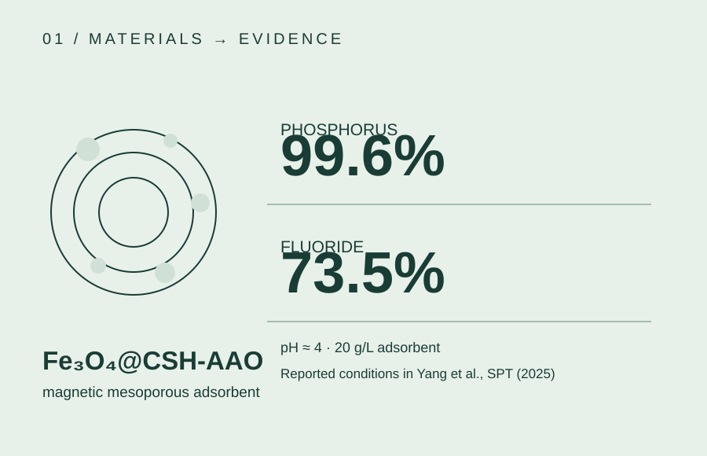
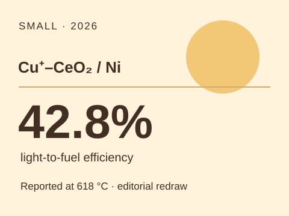
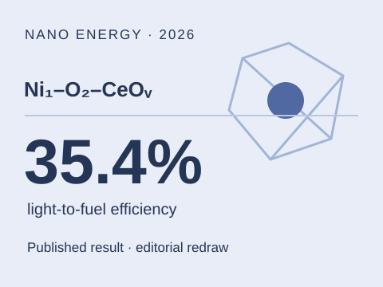
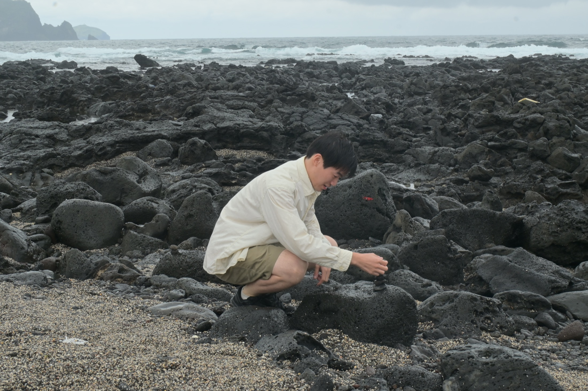
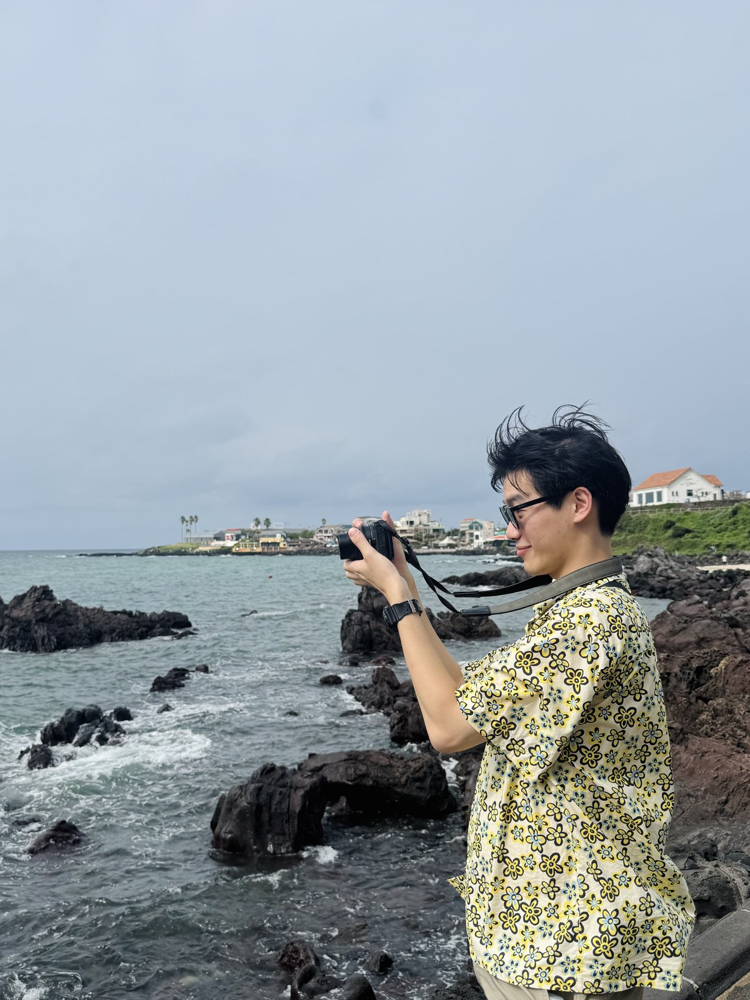
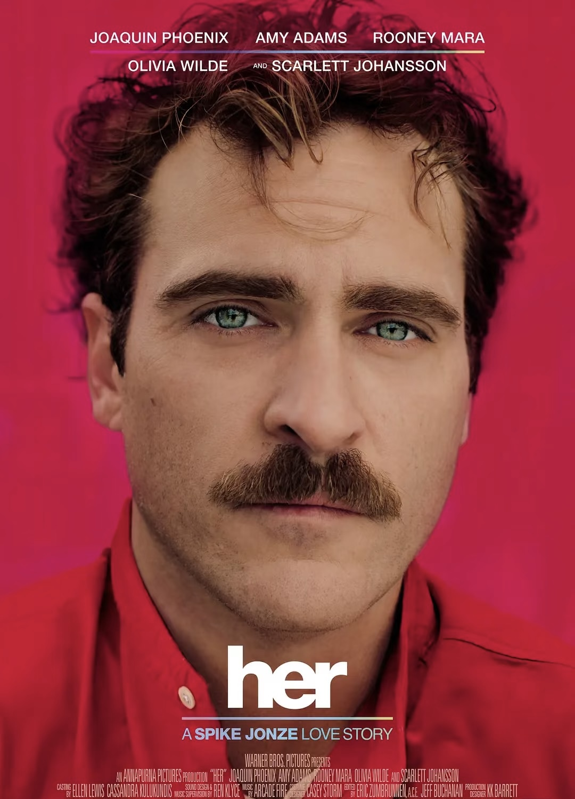

MASTER'S RESEARCH · ONGOING
催化剂结构，决定了什么？
比较不同合成路线下的 Ni/CeO₂，追踪 Ni 分散、CeO₂ 缺陷和界面结构如何影响 CH₄/CO₂ 活化、积碳与失活。
示意图为本网站重绘，并非论文原图。我是杨皓然，正在中国科学院大学研究光热催化与材料界面。我也设计科学 Agent 的评测方法：让模型的判断回到实验记录、物理约束与下一步可验证的问题。
从真实实验出发，研究材料结构如何改变反应，并让 AI 帮助提出更好的下一次实验。
我的主线是建立可检验的“合成—结构—性能”关系：在 Ni/CeO₂ 光热甲烷干重整中，区分颗粒尺寸、氧空位、金属载体界面与反应稳定性的作用；再用这些数据检验科学 Agent 的证据推理能力。
比较不同合成路线下的 Ni/CeO₂，追踪 Ni 分散、CeO₂ 缺陷和界面结构如何影响 CH₄/CO₂ 活化、积碳与失活。
示意图为本网站重绘，并非论文原图。
PT-DRM-Bench 正在开发中，关注数据质量、证据约束下的结构—性能推理，以及能区分竞争假设的实验选择。
研究设计示意图；尚未作为已发表的 benchmark 结果。优先展示可核实的成果和我在其中的位置。通过 DOI 链接查看期刊页面。

依据论文报告的条件与结果重绘；非出版物原图。
我主导了面向湿法磷酸废水的磁性介孔吸附剂研究，从材料制备到吸附动力学、等温线及 XPS/分子动力学机理分析，连接工业场景与原子尺度证据。
Separation and Purification Technology 353, 128195
DOI ↗
Small 22(44), e14302 · 合作研究：缺陷 CeO₂ 上的 Cu⁺ 调控 Ni 位点；论文报告 42.8% 光能到燃料效率。

Nano Energy 148, 111641 · 合作研究：通过局部配位调控理解单原子 Ni 的活性与稳定性。
Journal of Materiomics 8(6), 1199–1204
Research Progress on Functional Modification on Magnetic Nanoparticle Surface and Its Application in Wastewater Treatment · Industrial Minerals & Processing, 2023
Evaluation Model and Promotion of Logistics Transportation D and A System Based on AHP · CAMMIC / SPIE, 2023 · DOI ↗
这些是我目前研究与实践中形成的问题意识，不是已经得到证明的结论。
一个好的科学 Agent 应当能说清哪条结构—性能推断来自测量，哪条仍是假设；缺字段、单位错误或批次差异都应被显式处理。
流畅的机理叙述容易产生；真正有价值的建议应能区分竞争解释，并满足实验室的物理与资源约束。
在催化研究和车载 Agent 项目中，我都更关注失败样例、数据来源和版本回归，而非单一总分。
AI projects that shaped how I think about evidence, evaluation and useful tools.
一个会写 PRD、能上代码、也盯增长的数据导向产品人。

中国科学院大学硕士在读，聚焦 AI 产品从 PMF 验证到 MVP 落地。崇尚创意、艺术与科技的融合，也执着于增长和 ROI。
自主完成 AI 产品全栈开发，习惯快速试错并记录复盘，能在不确定中推进到可上线状态。
注重留存、转化与复购，通过指标看板和用户反馈闭环，持续校准功能优先级与商业价值。
4人团队负责人，承担产品方向、部分开发与运营协同，推动设计、技术与市场节奏一致。
保持好奇，比保持正确更重要。
我会把灵感记在随手笔记里，来自电影、音乐、街头对话，也来自和团队的每次复盘。复杂问题先拆小，先跑起来，再打磨成作品。
生活瞬间也是灵感。




把研究、产品与业务放进同一条实践路径里。
研究 Ni/CeO₂ 光热催化与科学 Agent 评测；获 2025 年中国科学院研究所奖学金。
研究知识库、策略与执行 Skill 组成的企业数据治理 Agent 工作流；对比 Agent 生成策略与传统流程，实习项目报告治理成本降低 20%。
从用户日志构造跨域多轮评测案例，分析车载 Agent 的失败模式并评估模型及上下文流程修订；内部评测中的任务成功率从 27% 升至 82%。
围绕 AI 求职产品做用户洞察、Prompt 体验优化与增长实验，沉淀 15+ 项指标看板并分析 500+ 条反馈，推动 7 日留存提升 15%，互动时长提升 30%。
参与工业碳核算 SaaS 建设，推动预测模型精度达标（MAPE < 8%）并完成 API 产品化封装，同时协同梳理企业碳合规需求并推进 PRD 交付。
专业排名 7/101；2024 年国家奖学金。早期研究包括磁性纳米材料与氮化硼纳米管。
关于 AI 产品、评测与行业趋势的独立观察。
真正决定 Agent 能不能从 demo 走向产品的，往往不是它「会不会做」，而是你「看不看得见它是怎么做的、为什么做错了、下一次能不能更稳」。
从 H2H，到 A2H，再到 A2A，连接关系正在慢慢改写。商业世界正在从「App 之间集成」走向「Agent 之间协商」。
任务完成率只是在问你最后有没有把活交上来；Planning 评测真正问的是：你有没有先想清楚路径、有没有走弯路、有没有浪费预算。
做了很多评测，结果没用，你会开始怀疑是团队不行，是模型不行……很多时候，团队做的不是评测，而是一种看起来像评测的劳动。
绝大多数人在看这些榜单的时候，要么直接跳过，要么就记个总分，觉得分数高的就是最好的。今天系统聊聊 AI 评测榜单背后的逻辑。
从灰色代购到基础设施，AI 中转站正在变成 AI 时代的流量入口、支付入口和数据入口。三类截然不同的大玩家，盯上了同一件事。
我测完 GPT Image 2.0 生成出的那些图，突然就笑不出来了。它冲击的不只是设计行业，而是我们用了几百年建立的「视觉证据可信」这个前提。
如果你也有野心做一款伟大的产品，我们可以聊聊。